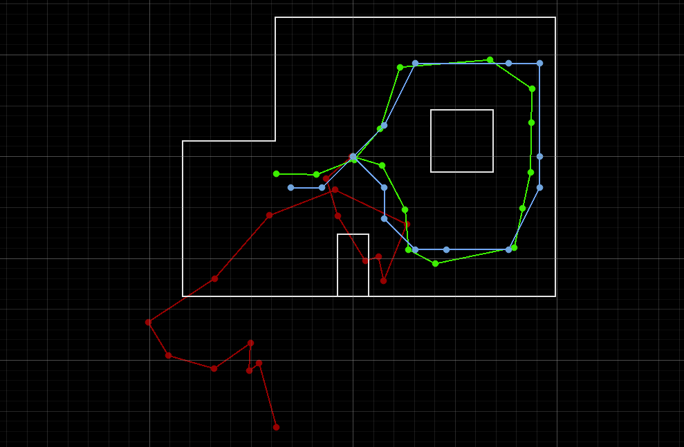

Lab 11：Localization on the real robot
Objective
The objective of this lab is to perform localization with Bayes Filter on the actual robot. As in prediction step the robot motion is so noisy, Update step will be used to based on 360 degree scans with TOF sensor. This lab code is mainly based on lab 9 code.
Task One: Test Localization in Simulation

In the simulation, odometry is plotted in red; ground truth is in green; belief is in blue. As shown, odometry is very apparently off the ground truth as error accumulates across each step. Instead, ground truth and belief look very familiar to each other, as Bayes filter does a decent job in simulation.
Task Two: Bayes Filter on Robot

Helper function: Compute Control

This step is to do the conversion for two poses from raw data to motion command form in preparation for odometry motion model. In the context of this and following functions, poses refer to numpy arrays with elements (x,y,yaw).
Reference
I referred to Selina Yao's and Trevor Dales' pages for debugging and understanding bayes filter.